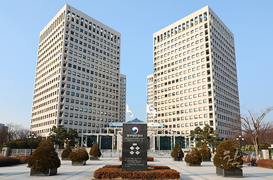

大韩民国的行政中心
- Home
- 投资优势
- 大韩民国的行政中心
中央行政及政府出资机关迁至世宗市 (57家)
-

政府大田官厅
-
世宗市政府大楼
中央行政机关(42家)
本部(22家)
国务调整室、总务总理秘书室、企划财政室、公正交易委员会、国土交通部、海洋水产部、环境部、农林畜产食品部、行政中心复合城市建设厅、保健福利部、雇佣劳动部、国家报勋处、教育部、文化体育旅游部、产业通商资源部、法制处、国民权益委员会、国税厅、人事革新处、行政安全部(灾难安全管理本部)、消防厅、海洋警察厅
所属机关(20家)
租税审判院、彩票委员会、中央土地收用委员会、航空铁路事故调查委员会、中央海洋安全审判院、中央环境纷争调停委员会、政府厅舍管理本部、中央劳动委员会、最低赁金委员会、产业灾害补偿保险再审查委员会、报勋审查委员会、教员诉请审查委员会、海外文化宣传院、经济自由区厅企划团、矿业注册事务所、贸易委员会、邮政事业本部、韩国政策广播院、诉请审查委员会


政府出资的研究机关(15家)
韩国开发研究院、韩国法制研究院、韩国租税财政研究院、经济/人文社会研究院、韩国交通研究院、韩国保健社会研究院、韩国职业能力开发院、科学技术政策研究院、对外经济政策研究院、产业研究院、韩国劳动研究院、韩国青少年政策研究院、韩国环境政策评价研究院、国家科学技术研究会、国土研究院汇集中央行政机关，提供快速的企业扶持服务。
扶持企业的中央机关汇聚这里，为投资企业提供各种认许可等“一站式”服务。
-
DCC
-
 大田市厅
大田市厅
大田广域市国际信誉等级评价
- 2016年被日本最高国际信誉评价公司JCR七年连续评为“A+”(稳定)
- 2015年穆迪信誉等级“Aa2”(属于总共21阶段信誉等级中的前三)